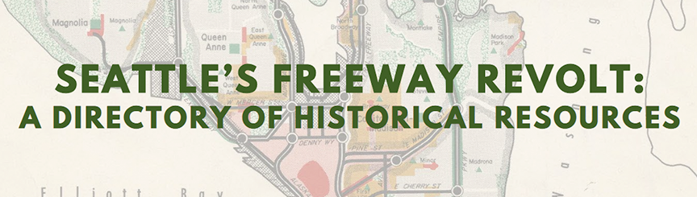

Seattle's Freeway Revolt
A directory of historical resources documenting Seattle's Freeway Revolt. I served as a Research Archivist on this project, which was funded by 4Culture. Priscilla Arsove, Anna Rudd, and Libby Hopfauf were the other members of the team.
The full directory is available online through the Seattle Public Library: Seattle's Freeway Revolt: a Directory of Historical Resources.